U01
CRAWLER
gierig
sammelt Datenfelder · Batch 1 · Must
Skizze: Platte mit Gesicht, CURL>-Schild, DATA-Rolle, Schaufel. Schrift entfällt (Spiegelregel), das Schild trägt einen Cursor-Block.
3 + Detail#detail

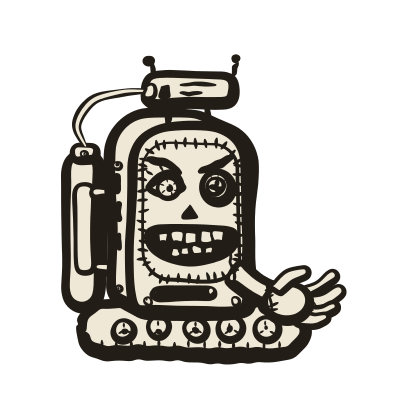
1
2
3
4
5
6
1Menschliches Auge unter schiefer Braue
2Linsen-Auge, ✦ als Pupille
3Menschliche Zähne, Daten-Schlitz am Bauch
4Greifhand statt Schaufel
5Gesicht aufgenäht: Kreuzstich-Naht
6Datentank, Füllstand leer (kommt per Code)
U04
CRITIC
pedantisch
prüft Ergebnisse · Batch 1 · Must
Skizze: Box auf Ketten mit Brille und Checkliste. Dazu aus der Art-Bibel: Lupe und Stift hinterm Ohr.
3 + Detail#detail
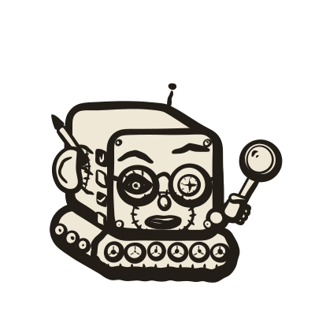

1
2
3
4
5
6
1Menschliches Auge hinter der Linse, Braue streng gesenkt
2Linsen-Auge mit ✦, andere Braue skeptisch hoch
3Menschliches Ohr mit Stift
4Zusammengepresste Lippen, Nase, Naht ums Gesicht
5Hand mit Lupe
6Checkliste auf der Flanke
U02
EXECUTOR
ausführungsfreudig
führt Befehle aus · Batch 0 · Maß aller Agenten
Skizze: Strichmännchen mit Bildschirmkopf, Schild und Speer. Dazu aus der Art-Bibel: ✦ auf dem Kopf, Rucksack mit Antenne.
1Menschliches Auge, weit offen, Braue hoch
2Linsen-Auge mit ✦, ✦-Antenne auf dem Kopf
3Breites Grinsen mit Zähnen, Naht ums Kinn
4Hand am Speer, Wimpel
5Hand am Schild, ✦ als Wappen
6Brustklappe mit Nieten
U03
SCOUT
neugierig
Aufklärer · Batch 1 · Must
Register: schlanke Figur, übergroßes Fernrohr-Auge, lange Antenne, Schrittstellung. Cyborg: Das Fernrohr-Auge ist ein echtes Menschenauge auf einem Teleskop-Stiel, die Antenne besteht aus Wirbeln.
2 + Detail#detail
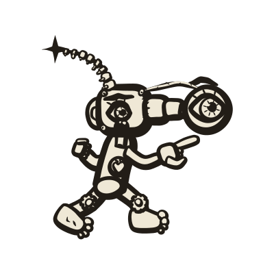
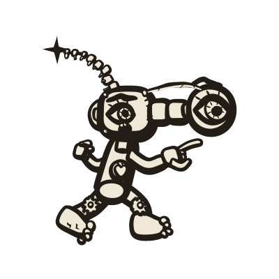
1
2
3
4
5
6
1Menschenauge als Fernrohr-Linse auf drei Teleskop-Ringen
2Antenne aus Wirbeln, ✦ an der Spitze
3Herz im Brustfenster
4Zahnrad als Kniegelenk
5Kreuzstich-Naht am Fernrohr-Ansatz
6Menschenfuß mit Zehen statt Stiefel
U05
PLANNER
bedächtig
Tempo und Fokusfeuer · Batch 6 · Should
Register: Klemmbrett mit Checkliste, Zirkel, Schirmmütze. Cyborg: Die Mütze hat eine Glaskrone, darunter arbeitet ein Gehirn. Im Brustfenster schlägt ein Herz.
2 + Detail#detail
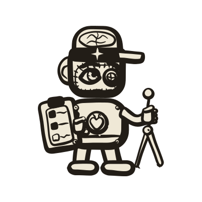
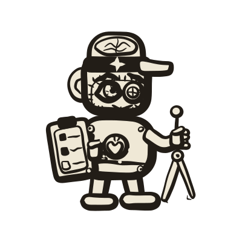
1
2
3
4
5
6
1Gehirn unter der Glaskrone der Schirmmütze
2Linsen-Auge mit Fadenkreuz statt ✦
3Klemmbrett mit Checkliste (Kästchen, keine Schrift)
4Zirkel, geht Schritt für Schritt
5Herzfenster mit Nieten
6Menschenohr
U06
TRANSFORMER
aufmerksam
Multi-Head, ATTENTION-Bonus · Batch 6 · Should
Register: Kettenfahrzeug mit 3–4 kleinen Köpfen, Spulen statt Kanonenrohr. Cyborg: Jeder Kopf trägt ein anderes Menschenmerkmal, Kabelschleifen verbinden die Köpfe.
2 + Detail#detail
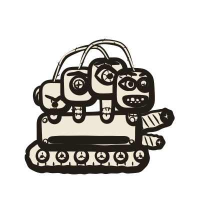
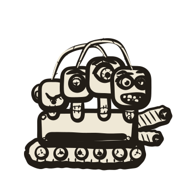
1
2
3
4
5
6
1Kopf 1: Menschenauge, Linsen-Auge, Gebiss
2Kopf 2: ein einziges großes Menschenauge
3Kopf 4 schläft, Auge geschlossen
4Kabelschleife zwischen den Köpfen (Attention)
5Spule statt Rohr, Elektrode mit ✦
6Hals mit Kreuzstich-Kragen
U07
INJECTOR
hinterhältig
Übernahme per Prompt-Injection · Batch 7 · Could
Register: riesige Spritze, geschweifte Klammern auf dem Kolben. Cyborg: Im Zylinder schwimmt ein Auge, auf dem Rücken hängt ein Tropfbeutel, das Grinsen hat eine Zunge.
1Geschweifte Klammern auf dem Kolben
2Auge schwimmt im Zylinder
3Tropfbeutel auf dem Rücken
4Grinsen mit Zunge, eine Braue hoch
5Faust um den Zylinder
6Tropfen an der Nadelspitze
U08
BATCH
stoisch
Salven-Artillerie · Batch 7 · Could
Register: Artilleriegeschütz, Munition als Lochkarten, langes Rohr schräg nach oben. Cyborg: Das Geschütz kaut eine Lochkarte, die Munition steckt als Fächer im Rückenkorb.
1Gekaute Lochkarte im Mund
2Müdes Menschenauge, Braue hängt
3Munition: Fächer aus Lochkarten im Korb
4Zahnrad am Richtgetriebe
5Rückholfeder am Rohr
6Mündung mit Bremse
E01
SHARD
eisig
MONOLITH · Batch 1 · Must
Register: Splitter auf zwei Stelzbeinen, waagerechter Schlitz als Auge, schwere Schraffur. Cyborg: Menschenauge mit waagerechter Pupille, Gebiss, Stelzbeine aus Knochen mit nackten Füßen. Die Naht des MONOLITH sind Klammern.
2 + Detail#detail
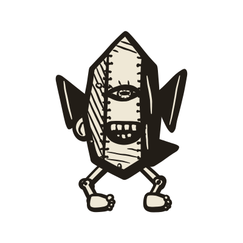
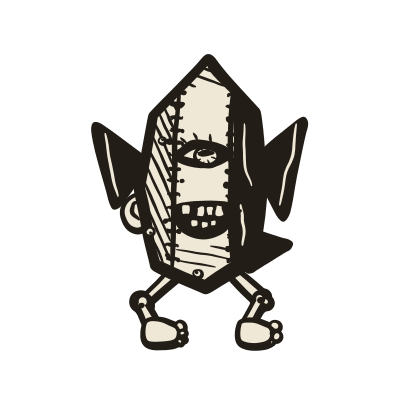
1
2
3
4
5
6
1Menschenauge mit waagerechter Pupille im Schlitz
2Menschliche Zähne in der Gesichtsplatte
3Menschenohr am Kristall
4Stelzbeine aus Knochen mit Knie-Knollen
5Klammern entlang der Kante statt Kreuzstichen
6Nackter Fuß mit Zehen
E02
SCRAPER
raffgierig
MONOLITH · Batch 1 · Must
Register: Kratzmaschine in Blockform, Harke vorn, praller Beutesack hinten. Cyborg: Die Harke ist eine Krallenhand, der Sack hat einen Reißverschluss. Dunkles Gegenstück zum CRAWLER.
1Menschenauge neben dem Schlitz-Auge
2Krallenhand als Harke
3Reißverschluss am Beutesack
4Klammern an der Blockkante
5Gebiss mit zwei Zahnreihen
6Datenwürfel ragen aus dem Sackhals
E03
BRUTEFORCE
stur
MONOLITH · Batch 6 · Should
Register: massiver Block auf Ketten, Rammbock, zwei Hämmer. Cyborg: Die Hämmer sind Schlagringe mit Fingerlöchern, der Kühlergrill ist ein Gebiss.
2 + Detail#detail
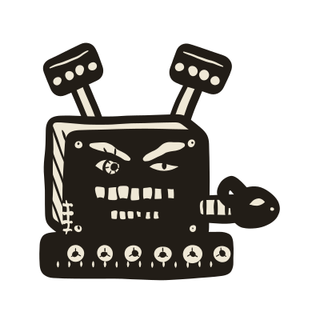
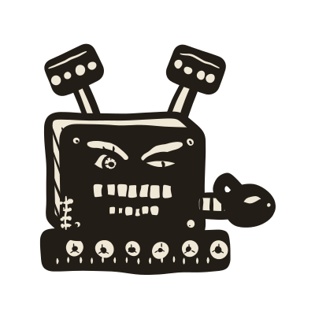
1
2
3
4
5
6
1Hammer als Schlagring mit Fingerlöchern
2Menschenauge unter schwerer Braue
3Schlitz-Auge
4Kühlergrill als Gebiss
5Rammbock mit Widderkopf und Horn
6Nieten statt Nähte
E04
SPAMMER
aufdringlich
MONOLITH · 3 Varianten · Batch 7 · Could
Register: Briefumschläge mit Fledermausflügeln, je leicht anders. Cyborg: Die Flügel bestehen aus Fingerknochen mit Knöcheln, das Siegel ist ein Auge, die Klappe ein Mund.
1 V1 + Detail#detail
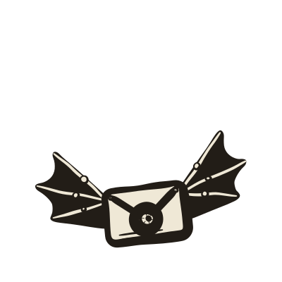
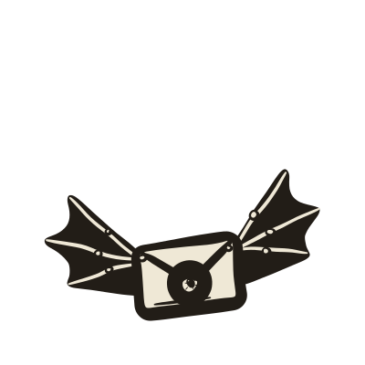
1
2
3
4
5
6
2 V2 + Detail#detail
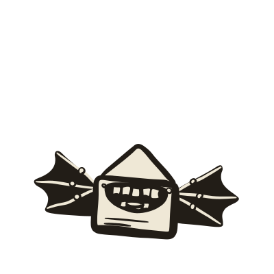
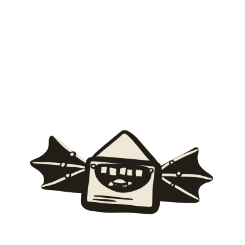
1
2
3
4
5
6
1Siegel als Auge (V1 Mensch, V3 Schlitz), bei V2 das Gebiss
2Flügel mit Fingerknochen
3Umschlag, Klappe als Maul
4Adresszeilen als Striche
5Knöchel an den Flügelfingern
6Niete (V3: Klammern am Riss)
N04
WRACK klein
erledigt
für alle Fußeinheiten · Batch 1 · Must
Register: umgekippte, zerbrochene Figur, generisch für alle Fußeinheiten. Cyborg: Rippen und Sehnerv-Kabel liegen offen, der Kopf ist weggerollt, ein Stiefel ist übrig.
2 + Detail#detail
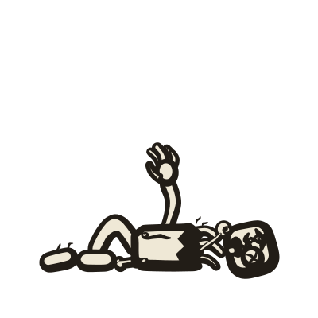
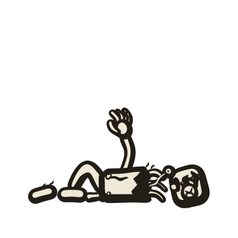
1
2
3
4
5
6
1Hand greift nach oben
2Augapfel am Sehnerv-Kabel
3Rippen ragen aus dem Bruch
4Kopf mit X-Auge und Zunge
5Knochenstumpf, Bein abgerissen
6Einzelner Stiefel
N04b
WRACK groß
ausgebrannt
für CRAWLER, SCRAPER, Fahrzeuge · Batch 1 · Must
Register: zerbrochenes Fahrzeug-Wrack, generisch für CRAWLER, SCRAPER, Fahrzeuge. Cyborg: Hülle gerissen, eine Hand greift aus dem Spalt, Kettenglieder liegen verstreut.
1Hand greift aus dem Spalt
2Abgefallener Kopf mit X-Auge
3Klammern am Riss
4Kettenglieder liegen verstreut
5Zahnrad
6Laufrolle